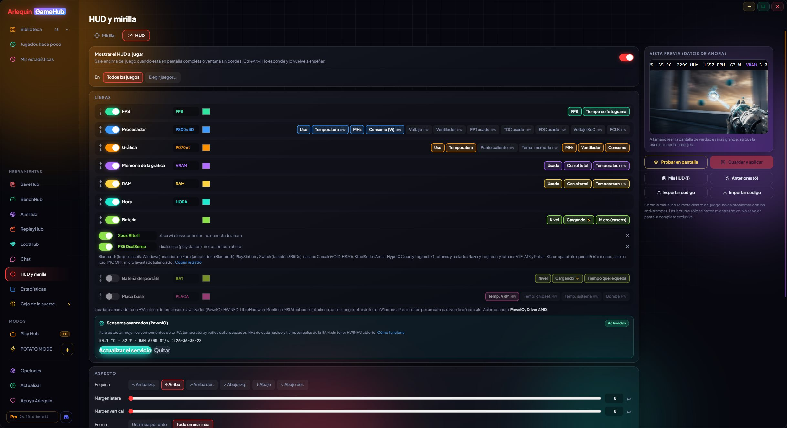
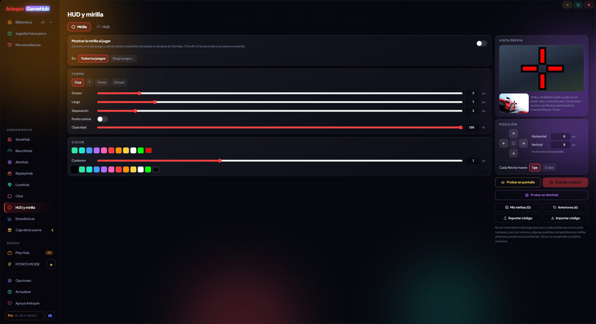

必要な情報を、ゲーム画面の上に
FPS、温度、消費電力を表示するHUDと、好みに合わせて作れるクロスヘア。ゲームの内部には入り込まないので、アンチチートの問題もありません。
HUD:プレイ中のデータを表示
FPS、CPU、GPU、メモリ、時刻をゲーム画面の隅に、好きなスタイルで表示します。
各行はグループ(FPS、GPU、CPU、グラフィックメモリ、RAM、時刻)で、ラベルと色があり、それぞれ表示するデータを選べます。並び順は自由に変えられ、個別にオフにもできます。
表示する隅、余白、項目ごとに1行にするか全部を1行にするか、フォントサイズと書体、太字、色、背景、背景なしでも読めるようにする文字の縁取り、更新間隔(0.25〜2秒)を選べます。
ワイヤレス機器のバッテリー残量も、機器ごとに1行で表示できます(充電中は⚡、残量が少ないと赤)。対応機器は、PlayStation、Xbox、Switch、8BitDoのコントローラー、Corsair、Razer、SteelSeries、HyperX、Logitechのヘッドセット、Logitechのマウスとキーボード、そしてBluetoothで接続しているものです。
編集中は、その時点のPCの実際のデータでプレビューが表示されます。データを読み取るのは表示されている間だけで、HUDを隠している間は何も使いません。
HUDは画面下部の中央にも配置でき、ノートPCのバッテリー(充電中かどうかも)を表示する行や、グラフィックメモリの行に温度を表示することもできます。Razer BlackShark V3 Proヘッドセットや、レシーバー付きのVXE、ATK、Pulsarのマウスなど、バッテリーを読み取れる機器も増えています。
Discord、OBS、Streamlabsで配信している場合、HUDにはプレビュー側ではなくゲームのFPSが表示されます。また、ファイルが壊れても、保存済みのHUDとクロスヘアが失われることはありません。
HUDは、手前に表示されていなくても、開いているゲームのFPSを表示します。常に画面上に表示しておくこともでき(デスクトップでも)、複数のモニターがある場合は表示する画面を選べます。
使い方
- ツール → HUDとクロスヘア → HUD。
- 「画面で試す」を押すと、すべての前面にすぐ表示されます。
- プレイ中は自動で表示されます。Ctrl+Alt+Hで非表示と再表示を切り替えられます。

表示内容
基本的な情報はWindowsから、温度と消費電力はセンサープログラムから取得します。
何もインストールしなくても(タスクマネージャーと同じデータ):FPSとフレームタイム、CPU使用率と実際のMHz、GPU使用率・MHz・温度・ファン、使用中のグラフィックメモリとRAM(希望すれば合計も)。
センサープログラムを開いている場合:CPUの温度と消費電力、RAMの温度、GPUのホットスポットとメモリの温度、GPUの消費電力(ワット。AMDではボード全体のTBP)。Windowsは専用ドライバーなしではこのデータを提供しないため、GameHubはすでにお使いのプログラムから読み取ります。直接ダウンロード版では、「高度なセンサー」(任意、Windowsの許可が必要)をオンにすれば、別のプログラムを開かなくても取得できます。Microsoft Store版では、センサープログラムを使ってください。
複数のプログラムを開いている場合、各値は最初にその値を持っているプログラムから取得され、1つが閉じても気づかないうちに次のプログラムに切り替わります。エディターで値にカーソルを合わせると、どのプログラムから取得しているかが分かります。どれもない場合、その値は「—」と表示されます(設定によっては非表示になります)。
使い方
- HWiNFO:設定で「Shared Memory Support」にチェックを入れてください(無料版では12時間ごとにオフになります)。
- LibreHardwareMonitor:Options → Remote Web Server → Run。
- MSI Afterburner:開いておくだけでOKです(RTSSがあればFPSも取得できます)。
非対応
- HWMonitor:他のプログラムとデータを共有しません。
好みに合わせて作れるクロスヘア
初期設定は中央配置で、0.1ピクセル単位で調整できます。
エディターで、形(十字、T字、ドット、円)、太さ、長さ、すき間、半径、中心のドット、色、不透明度、縁取りとその色を選べます。プレビューは1マスが1ピクセルの拡大表示と、実寸表示の2種類があります。
画面のちょうど中央に表示され、1ピクセル単位、または0.1ピクセル刻みで動かせます。小数にすると、昔のゲームのように2ピクセルにまたがって表示され、正確な位置に合わせられます(画面に半ピクセルはないため、少しだけぼやけます)。
通常のマッチで使っている人は多いですが、大会や一部の対戦では外部のクロスヘアが禁止されている場合があります。遊ぶゲームのルールを確認してください。
使い方
- ツール → HUDとクロスヘア → クロスヘア。
- 画面上の矢印かキーボードの矢印キーで動かします(Shift:10 px)。
- プレイ中は自動で表示されます。Ctrl+Alt+Xで非表示と再表示を切り替えられます。

グラフィックカードのコネクター監視
グラフィックカードの16ピンコネクターが焼ける前に警告します。
16ピンコネクター(12VHPWR / 12V-2x6)を使う一部のグラフィックカードでは、接触不良によるコネクターの焼損が起きています。プレイ中、GameHubはグラフィックカードがHWiNFO経由で公開している情報を監視し、異常が数秒続いた場合(一瞬のスパイクではなく)、Windowsの通知とゲーム画面上の赤い行で警告します。
- ASUS ROG AstralとROG Matrix(RTX 4090、5080、5090):各ピンの電流を監視。どれかが過負荷の場合や、他のピンに電流が流れているのに1本だけ流れていない場合(接触不良)に警告します。
- 16ピンのその他のNVIDIA RTX 40/50シリーズ:コネクターの電圧を監視。一定時間下がり続ける場合、接触不良かケーブルの劣化が考えられます。
- その他のカード(Sapphire NITRO+ RX 9070 XT PhantomLinkなど):HWiNFOがコネクターのセンサーを読み取れるようになった時に備えています。
PCをシャットダウンしたりゲームを閉じたりはしません。何が起きているか、何をすべきか(保存する、ゲームを閉じる、ケーブルが奥まで差し込まれていて、コネクター付近で急に曲がっていないか確認する)をお知らせします。
使い方
- HWiNFOを開いて(データを共有して)おけば、自動で動作します。
- 8ピンコネクターのグラフィックカードには不要です。
保存、復元、共有
HUDとクロスヘアを、そのままの状態で。
HUDやクロスヘアに名前(「大会用」「Valorantグリーン」など)を付けて保存すれば、いつでも元に戻せます。別のものを保存するたびに、前のものは「以前のもの」(直近20件)に残るので、念のため確認したり、元に戻したり、削除したりできます。
すべてのゲームで表示するか、選んだゲームだけで表示するかを選べます。すべてのゲームがシューティングとは限りません。また、コード(ARLQ-MIRA-…またはARLQ-HUD-…)で友達と共有して試してもらえます。コードの作成はArlequinProの機能で、読み込みは誰でも無料です。
使い方
- エディターの「マイクロスヘア」/「マイHUD」と「以前のもの」。
- 「コードをエクスポート」(ArlequinPro)と「コードをインポート」(無料)。
- 「コードをインポート」はCS2とVALORANTのクロスヘアコードにも対応し、CS2のものはPCから取り込めます。「AimHubで試す」では、いくつかの背景の上に表示して確認できます。
- 「CS2またはVALORANT用にコピー」(ArlequinPro)で、ゲームにインポートするためにクロスヘアをコピーします。